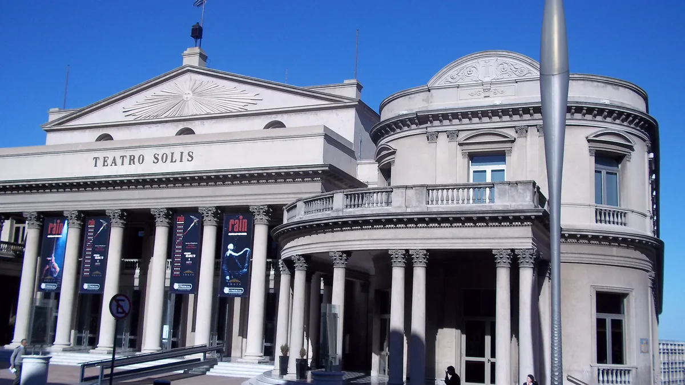

01
Teatro Solís
Teatro histórico$U 400
grátis na quarta-feira

Wikimedia Commons · Andrea Mazza · CC BY 3.0
Valor da entrada
Fonte: site oficial do Teatro Solís e portal da Intendência de Montevidéu, consultados em 16/set/2026.
$U 200 apresentando documento uruguaio e $U 400 sem ele. É a maior diferença por nacionalidade entre os pontos deste guia — o estrangeiro paga exatamente o dobro.
Mas às quartas-feiras a visita é gratuita para todos, nos horários das 11h, 12h e 16h. Quem apresentar o comprovante digital de pagamento da Tasa Turística tem 50% de desconto nos demais dias.
Paga-se só na bilheteria do teatro, em pesos uruguaios, dinheiro ou cartão de crédito e débito.
$U 200 apresentando documento uruguaio e $U 400 sem ele. É a maior diferença por nacionalidade entre os pontos deste guia — o estrangeiro paga exatamente o dobro.
Mas às quartas-feiras a visita é gratuita para todos, nos horários das 11h, 12h e 16h. Quem apresentar o comprovante digital de pagamento da Tasa Turística tem 50% de desconto nos demais dias.
Paga-se só na bilheteria do teatro, em pesos uruguaios, dinheiro ou cartão de crédito e débito.
Dias e horários
Visitas guiadas de quarta a sexta às 11h, 12h e 16h, e sábados e domingos às 15h e 16h. Idiomas: espanhol, português e inglês.
As gratuitas são as de quarta-feira.
As gratuitas são as de quarta-feira.
Onde fica
Buenos Aires 652, esquina com a Plaza Independencia, na Ciudad Vieja. Telefone (0598) 1950.1856.
Ver no mapa
Ver no mapa
Fatos históricos
As obras começaram em 1842 e pararam no ano seguinte, com o início do Sítio de Montevidéu — o teatro ficou parado a Guerra Grande inteira. O projeto original era do italiano Carlo Zucchi e foi adaptado às possibilidades econômicas do pós-guerra por Francisco Javier De Garmendia.
Inaugurou em 25 de agosto de 1856, com o presidente Gabriel Pereira presente e o Ernani, de Verdi, no palco. Os corpos laterais só vieram dezoito anos depois, entre 1869 e 1874, sob direção de Víctor Rabú — é por isso que o prédio parece três construções encostadas, e é exatamente o que ele é.
Capacidade de 1.500 espectadores. O nome homenageia Juan Díaz de Solís, o navegador que chegou ao Rio da Prata.
Inaugurou em 25 de agosto de 1856, com o presidente Gabriel Pereira presente e o Ernani, de Verdi, no palco. Os corpos laterais só vieram dezoito anos depois, entre 1869 e 1874, sob direção de Víctor Rabú — é por isso que o prédio parece três construções encostadas, e é exatamente o que ele é.
Capacidade de 1.500 espectadores. O nome homenageia Juan Díaz de Solís, o navegador que chegou ao Rio da Prata.